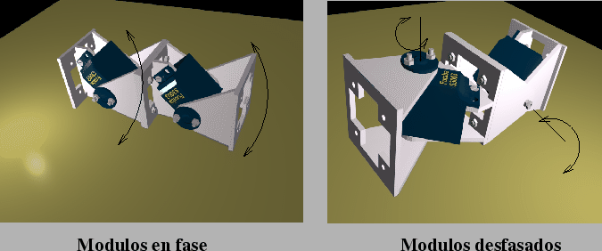

Una características fundamental es la de poder colocar dos módulos
en fase o desfasado (apartado ![[*]](crossref.png) ),
como se muestra en la figura . Cuando están
conectados en fase, todas las articulaciones se mueven permaneciendo
en el mismo plano (en la figura los dos
módulos permanecen siempre en un plano perpendicular al suelo). Cuando
están desfasados, pueden estar en planos distintos.
),
como se muestra en la figura . Cuando están
conectados en fase, todas las articulaciones se mueven permaneciendo
en el mismo plano (en la figura los dos
módulos permanecen siempre en un plano perpendicular al suelo). Cuando
están desfasados, pueden estar en planos distintos.
|
 |
Esta característica permite que se puedan construir gusanos que se puedan mover por un plano (conexiones desfasadas), o bien gusano que sólo avancen en línea recta (todos los módulos en fase).
Para la unión de los módulos se utilizan 4 tornillos situados en las cuatro esquinas de las bases de los módulos. En este sentido, el robot no es autoreconfigurable. Los módulos hay que cambiarlos ``a mano''.
Las bases del módulo (B1 y B2) tienen un hueco en interior, lo que resulta tremendamente útil para pasar los cables de un módulo a otro.
Además de disponer de los planos para su fabricación, en el proceso de diseño se han realizado modelos virtuales en 3D de todas las piezas, tornillos y el propio servo, por lo que se ha podido construir un modelo virtual del módulo antes de disponer de la pierza fabricada.
La ventaja de disponer de un modelo virtual, es que nos podemos hacer una idea del aspecto que va a tener un determinado robot, antes de construirlo. Además es muy útil para realizar manuales y animaciones.